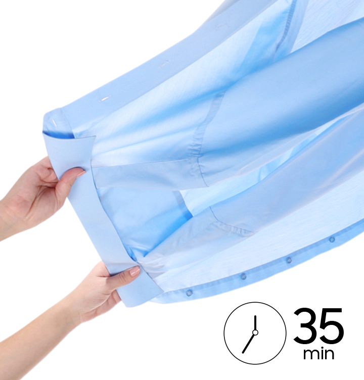

Быстрая сушка
в небольших количествах
Quick Dry 35'
Ничто не сравнится с комфортом ношения свежевыстиранной и высушенной одежды, как только вы достаете ее из сушилки. С сушилкой Samsung вы можете это сделать. За 35 минут * даже килограмм белья готов к сушке, если вам нужно одновременно несколько вещей.